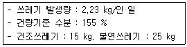
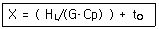
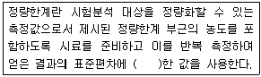
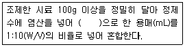
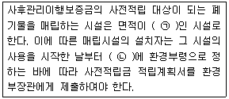
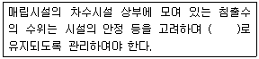
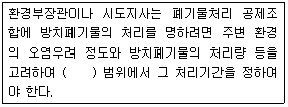
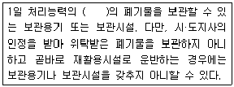

폐기물처리기사 (2016-10-01 기출문제)
1과목: 폐기물 개론
1. 최근 10년 동안 우리나라 생활폐기물 처리방법 중 처리비율이 증가하는 것과 감소하는 것의 바른 조합은?
- 증가 : 매립, 감소 : 소각
- 증가 : 재활용, 감소 : 매립
- 증가 : 소각, 감소 : 재활용
- 증가 : 매립, 감소 : 재활용
(정답률: 86%)

2. 용매추출(solvent extraction)공정을 적용하기 어려운 폐기물은?
- 분배계수가 높은 폐기물
- 물에 대한 용해도가 높은 폐기물
- 끓는 점이 낮은 폐기물
- 물에 대한 밀도가 낮은 폐기물
(정답률: 70%)
3. 분뇨의 특성으로 가장 거리가 먼 것은?
- 분뇨에 포함된 협잡물의 양은 발생지역에 따라 차이가 크다.
- 고액 분리가 용이하다.
- 분과 뇨(분:뇨)의 고형질의 비는 7:1 정도이다.
- 분뇨의 비중은 1.02 정도이며 질소화합물 함유도가 높다.
(정답률: 80%)
4. 파쇄에너지 계산과 관련된 이론이 아닌 것은?
- Rittinger의 법칙
- Kick의 법칙
- Bond의 법칙
- Worrell의 법칙
(정답률: 61%)
5. 새로운 쓰레기 수거 시스템인 관거수거방법 중 공기수송에 대한 설명으로 가장 거리가 먼 것은?
- 공기수송은 고층주택 밀집지역에 적합하며 소음 방지시설이 필요하다.
- 진공수송은 쓰레기를 받는 쪽에서 흡인하여 수송 하는 것으로 진공압력은 최소 1.5 kgf/cm2 이상이다.
- 진공수송의 경제적인 수집거리는 약 2 km 정도이다.
- 가압수송은 쓰레기를 불어서 수송하는 방법으로 진공수송보다는 수송거리를 더 길게 할 수 있다.
(정답률: 56%)
6. 적환장에 대한 설명으로 틀린 것은?
- 직접투하 방식은 건설비 및 운영비가 다른 방법에 비해 모두 적다.
- 저장투하 방식은 수거차의 대기시간이 직접투하 방식 보다 길다.
- 직접저장투하 결합방식은 재활용품의 회수율을 증대시킬 수 있는 방법이다.
- 적환장의 위치는 해당지역의 발생 폐기물의 무게 중심에 가까운 곳이 유리하다.
(정답률: 77%)
7. 3.5%의 고형물을 함유하는 슬러지 300 m3를 탈수시켜 70%의 함수율을 갖는 케이크를 얻었다면 탈수된 케이크의 양(m3)은? (단, 슬러지의 밀도 1ton/m3)
- 35
- 40
- 45
- 50
(정답률: 71%)
8. 도시 쓰레기 중 비가연성 부분이 중량비로 약 60% 차지하였다. 밀도가 450 kg/m3인 쓰레기 8 m3가 있을 때 가연성 물질의 양(kg)은?
- 270
- 1440
- 2160
- 3600
(정답률: 70%)
9. 원소분석에 의한 발열량(kcal/kg) 계산 방법 중에서 O의 절반이 CO의 형으로, 나머지 절반은 H2O의 형으로 되어 있다고 가정한 Steuer식을 가장 바르게 나타낸 것은?
- H(L) = 81(C-3×O/8) + 57(3×O/8) +345(H-O/16) + 25S – 6(9H+W)
- H(L) = 81(C-3×O/8) + 80(3×O/16) +245(H-O/8) + 35S – 9(6H+W)
- H(L) = 81(C-3×O/8) + 345H + 35S +80(3×O/4) - 9(6H+W)
- H(L) = 81(C-3×O/8) + 245H + 25S +57(3×O/4) - 6(9H+W)
(정답률: 57%)
10. 폐기물 소각처리에 비해 Pyrolysis가 가지는 장점으로 틀린 것은?
- 배기가스량이 상대적으로 적다.
- 중금속 성분이 재에 고정되는 확률이 크다.
- 질소산화물의 발생량이 적다.
- 산화성 분위기를 유지할 수 있다.
(정답률: 58%)
11. 쓰레기 수거노선 설정요령으로 가장 거리가 먼것은?
- 지형이 언덕인 경우는 내려가면서 수거한다.
- U자 회전을 피하여 수거한다.
- 아주 많은 양의 쓰레기가 발생되는 발생원은 하루 중 가장 나중에 수거한다.
- 가능한 한 시계 방향으로 수거노선을 설정한다.
(정답률: 85%)
12. 도시의 쓰레기 수거대상 인구가 648825명이며 이 도시의 쓰레기 배출량은 1.15 kg/인·일이다. 수거 인부는 233명이며, 이들이 1일에 8시간을 작업한다면 이 때 MHT는?
- 2.5
- 3.2
- 3.8
- 4.2
(정답률: 60%)
13. 우리나라 쓰레기 수거형태 중 효율이 가장 나쁜 것은?
- 타종수거
- 손수레 문전수거
- 대형쓰레기통수거
- 블록식 수거
(정답률: 75%)
14. 최소 크기가 10cm인 폐기물을 2cm로 파쇄하고자 할 때 Kick's 법칙에 의한 소요 동력은 동일 폐기물을 4cm로 파쇄할 때 소요되는 동력의 몇 배인가? (단, n=1로 가정)
- 1.76배
- 1.62배
- 1.56배
- 1.42배
(정답률: 70%)
15. 생활 쓰레기 감량화에 대한 설명으로 가장 거리가 먼 것은?
- 가정에서의 물품 저장량을 적정 수준으로 유지한다.
- 깨끗하게 다듬은 채소의 시장 반입량을 증가시킨다.
- 백화점의 무포장센터 설치를 증가시킨다.
- 상품의 포장 공간 비율을 증가시킨다.
(정답률: 86%)
16. 탄소를 함유한 폐기물의 연소 시 탄소 1kg당 발열량이 가장 작은 경우는?
- C가 CO2와 반응해 2CO로 될 때
- C가 H2O와 반응해 CO와 H2로 될 때
- C가 0.5O2와 반응해 CO로 될 때
- C가 O2와 반응해 CO2로 될 때
(정답률: 73%)
17. 폐타이어의 이용, 처리방법으로 가장 거리가 먼것은?
- 시멘트킬린 열이용 : 시멘트킬린 연료인 유연탄의 일부를 폐타이어로 대체하여 시멘트 제조 보조연료로 이용
- 토목공사 : 폐타이어 내부에 흙과 골재를 투입하여 사방공사에 이용
- 건류소각재 이용 : 폐타이어 원형을 소각한 후 발생한 소각재를 이용하여 카본블랙 제조
- 고무분말 : 폐타이어를 분쇄하여 고무분말을 만들고 고무분말을 탈황하여 재생고무를 생산
(정답률: 62%)
18. 폐기물의 화학적 성분에는 3성분이 있다. 3성분에 속하지 않는 것은?
- 가연분
- 무기물질
- 수분
- 회분
(정답률: 84%)
19. 퇴비화 과정의 초기단계에서 나타나는 미생물은?
- Bacillus sp.
- Streptomyces sp.
- Aspergillus fumigatus
- fungi
(정답률: 79%)
20. 쓰레기의 습량기준 수분의 백분율(%)은?

- 66 %
- 61 %
- 56 %
- 51 %
(정답률: 48%)
2과목: 폐기물 처리 기술
21. 평균온도가 20℃인 수거분뇨 20kL/일을 처리하는 혐기성 소화조의 소화온도를 외부 가온에 의해 35℃로 유지하고자 한다. 이때 소요되는 열량(kcal/일)은? (단, 소화조의 열손실은 없는 것으로 간주, 분뇨의 비열 = 1.1 kcal/kg·℃, 비중 = 1.02)
- 2.4×105
- 3.4×105
- 4.4×105
- 5.4×105
(정답률: 68%)
22. 합성차수막인 CSPE에 관한 설명으로 틀린 것은?
- 미생물에 강하다.
- 강도가 높다.
- 산과 알칼리에 특히 강하다.
- 기름, 탄화수소 및 용매류에 약하다.
(정답률: 54%)
23. 합성차수막의 crystallinity가 증가하면 나타나는 성질로 가장 거리가 먼 것은?
- 화학물질에 대한 저항성이 커짐
- 충격에 약해짐
- 열에 대한 저항성이 감소됨
- 투수계수가 감소됨
(정답률: 55%)
24. 매립지 침출수 처리에 관한 설명으로 틀린 것은?
- 고농도의 TDS(50000 mg/L 이상)를 포함한 침출수는 생물학적 처리가 곤란하다.
- 많은 생물학적 처리시설에 있어서는 중금속의 독성이 문제가 되기도 한다.
- 황화물의 농도가 높으면 혐기성 처리 시 악취 문제가 발생할 수 있다.
- 높은 COD의 침출수는 호기성 처리하는 것이 혐기성 처리보다 경제적이다.
(정답률: 64%)
25. 해안매립공법 중 순차투입방법에 관한 설명으로 가장 거리가 먼 것은?
- 호안측으로부터 순차적으로 쓰레기를 투입하여 육지화하는 방법이다.
- 부유성 쓰레기의 수면확산에 의해 수면부와 육지부의 경계 구분이 어려워 매립장비가 매몰되기도 한다.
- 바닥지반이 연약한 경우 쓰레기 하중으로 연약층으 유동하거나 국부적으로 두껍게 퇴적되기도 한다.
- 수심이 깊은 처분장은 내수를 완전히 배제한 후 순차투입방법을 택하는 경우가 많다.
(정답률: 53%)
26. 용적 200 m3 인 혐기성소화조가 휘발성고형물(VS)을 70% 함유하는 슬러지고형물을 하루 100kg 받아들인다면 이 소화조의 휘발성고형물 부하율(kgVS/m3·d)은?
- 0.35
- 0.55
- 0.75
- 0.95
(정답률: 65%)
27. 혐기성 소화공법에 관한 설명으로 틀린 것은?
- 호기성 소화에 비하여 소화 슬러지의 발생량이 적다.
- 오랜 소화기간으로 소화 슬러지 탈수 및 건조가 어렵다.
- 소화 가스는 냄새가 나고 부식성이 높은 편이다.
- 고농도 폐수나 분뇨를 비교적 낮은 에너지 비용으로 처리할 수 있다.
(정답률: 72%)
28. BOD 농도가 30000 ppm인 생분뇨를 1차 처리(소화)하여 BOD를 75% 제거하였다. 이 1차 처리수를 20배 희석하여 2차 처리하였을 때 방류수의 BOD 농도가 20 ppm 이었다면, 2차 처리에서의 BOD 제거율(%)은? (단, 희석수의 BOD = 0 ppm가정)
- 90.8
- 92.2
- 94.7
- 98.3
(정답률: 64%)
29. 시멘트 기초법에 의한 폐기물고화처리 시 액상규산소다를 첨가하는 이유를 가장 옳게 설명한 것은?
- 액상 규산소다가 일종의 폐기물이며 두 가지 폐기물을 동시에 처리할 목적으로 첨가한다.
- 수분함량이 낮은 폐기물을 고화처리하기 위하여 사용한다.
- 폐기물 성분의 분해를 촉진시켜 고화효율을 증진시킬 목적으로 첨가한다.
- 폐기물, 시멘트 반죽을 교화질로 만들어 주기 위하여 첨가한다.
(정답률: 62%)
30. 친산소성 퇴비화 공정의 설계 운영고려 인자에 관한 내용으로 틀린 것은?
- 공기의 채널링이 원활하게 발생하도록 반응기간 동안 규칙적으로 교반하거나 뒤집어 주어야 한다.
- 퇴비단의 온도는 초기 며칠간은 50~55℃를 유지하여야 하며 활발한 분해를 위해서는 55~60℃가 적당하다.
- 퇴비화 기간 동안 수분함량은 50~60% 범위에서 유지되어야 한다.
- 초기 C/N 비는 25~50이 적정하다.
(정답률: 60%)
31. 육상 및 해안매립지 선정 시 고려사항에 관한 내용으로 가장 거리가 먼 것은?
- 육상매립 : 경관의 손상이 적을 것
- 육상매립 : 집수면적이 클 것
- 해안매립 : 조류특성에 변화를 주기 쉬운 장소를 피할 것
- 해안매립 : 물질확산에 영향을 주는 장소를 피할 것
(정답률: 75%)
32. 침출수의 물리·화학적 처리 방법에 포함되지 않는 것은?
- 중화 침전법
- 황화물 침전법
- 이온 교환법
- 습식 산화법
(정답률: 53%)
33. 함수율이 96%인 슬러지 10L에 응집제를 가하여 침전 농축시킨 결과 상등액과 침전 슬러지의 용적비가 2:1이었다면 침전 슬러지의 함수율(%)은? (단, 비중 = 1.0 기준, 상층액 SS, 응집제량 등 기타사항은 고려하지 않음)
- 84 %
- 88 %
- 92 %
- 94 %
(정답률: 55%)
34. 다이옥신을 제어하는 촉매로 효과적이지 못한 것은?
- Al2O3
- V2O5
- TiO2
- Pd
(정답률: 72%)
35. 일반적으로 방사성폐기물을 고준위 및 저준위로 나누는 기준은?
- 5 rem
- 10 rem
- 15 rem
- 20 rem
(정답률: 66%)
36. 30 ton의 음식물쓰레기를 볏짚과 혼합하여 C/N비 30으로 조정하여 퇴비화하고자 한다. 이때 볏짚의 필요량(ton)은? (단, 음식물쓰레기와 볏짚의 C/N비는 각각 20과 100이고, 다른 조건은 고려하지 않음)
- 약 4.3
- 약 7.3
- 약 9.3
- 약 11.3
(정답률: 61%)
37. 슬러지에 포함된 물의 형태 중 탈수성이 가장 용이한 것은?
- 모관결합수
- 표면부착수
- 내부수
- 입자경계수
(정답률: 75%)
38. 음식물쓰레기 처리방법으로 가장 부적당한 것은?
- 호기성 퇴비화
- 사료화
- 감량 및 소멸화
- 고형화
(정답률: 74%)
39. 연직 차수막에 대한 설명으로 가장 거리가 먼것은?
- 지중에 수평방향의 차수층이 존재할 경우 사용 가능하다.
- 단위면적당 공사비는 고가이나 총공사비는 싸다.
- 지중이므로 보수가 어렵지만 차수막 보강시공이 가능하다.
- 지하수 집배수 시설이 필요하다.
(정답률: 69%)
40. 복합퇴비화 시 함수율 85%인 슬러지와 함수율 40%인 톱밥을 1:2로 혼합한 후의 함수율과 퇴비화의 적정성 여부에 관한 설명으로 옳은 것은?
- 혼합 후 함수율3은 65%로 퇴비화에 부적절한 함수율이라 판단된다.
- 혼합 후 함수율은 65%로 퇴비화에 적절한 함수율이라 판단된다.
- 혼합 후 함수율은 55%로 퇴비화에 부적절한 함수율이라 판단된다.
- 혼합 후 함수율은 55%로 퇴비화에 적절한 함수율이라 판단된다.
(정답률: 73%)
3과목: 폐기물 소각 및 열회수
41. RDF에 관한 설명으로 틀린 것은?
- RDF내 염소함량이 크면 연료로 사용 시 다이옥신의 발생 등이 문제가 된다.
- RDF의 조성은 셀룰로오스가 주성분이므로 수분에 따른 부패의 우려가 없다.
- RDF를 대량으로 사용하기 위해서는 배합률(조성)이 일정하여야 하며 재의 양이 적어야 한다.
- RDF의 종류는 Power RDF, Pellet RDF, Fluff RDF가 있다.
(정답률: 70%)
42. 공기를 사용하여 C4H10을 완전 연소시킬 때 건조 연소가스 중의 (CO2)max(%)는?
- 12.4
- 14.1
- 16.6
- 18.3
(정답률: 51%)
43. 연료 중의 산소가 결합수의 상태로 있기 때문에 전수소에서 연소에 이용되지 않는 수소분을 공제한 수소는?
- 결합수소
- 고립수소
- 유효수소
- 자유수소
(정답률: 75%)
44. 증기 터어빈의 형식이 잘못 연결된 것은?
- 증기작동방식 – 충동, 반동, 혼합식 터어빈
- 증기이용방식 – 배압, 복수, 혼합 터어빈
- 증기유동방향 – 단류, 복류 터어빈
- 케이싱 수 – 1케이싱, 2케이싱 터어빈
(정답률: 55%)
45. 폐기물 소각에 필요한 이론공기량이 1.49Nm3/kg이고 공기비는 1.2이었다. 하루 폐기물 소각량이 200ton일 때 실제 필요한 공기량(Nm3/hr)은? (단, 24시간 연속 소각 기준)
- 약 15000
- 약 20000
- 약 25000
- 약 30000
(정답률: 63%)
46. 쓰레기를 소각 후 남은 재의 중량은 소각 전 쓰 레기중량의 1/4이다. 쓰레기 30ton을 소각하였을 때 재의 용량이 4 m3라면 재의 밀도(ton/m3)는?
- 1.3
- 1.6
- 1.9
- 2.1
(정답률: 73%)
47. 폐플라스틱 소각에 대한 설명으로 틀린 것은?
- 열가소성 폐플라스틱은 열분해 휘발분이 매우 많고 고정탄소는 적다.
- 열가소성 폐플라스틱은 분해 연소를 원칙으로 한다.
- 열경화성 폐플라스틱은 일반적으로 연소성이 우수하고 점화가 용이하여 수열에 의한 팽윤 균열이 적다.
- 열경화성 폐플라스틱의 적당한 로 형식은 전처리 파쇄 후 유동층 방식에 의한 것이 좋다.
(정답률: 68%)
48. 소각공정에서 발생하는 다이옥신에 관한 설명으로 가장 거리가 먼 것은?
- 쓰레기 중 PVC 또는 플라스틱류 등을 포함하고 있는 합성물질을 연소시킬 때 발생한다.
- 연소 시 발생하는 미연분의 양과 비산재의 양을 줄여 다이옥신을 저감할 수 있다.
- 다이옥신 재형성 온도구역을 설정하여 재합성을 유도함으로써 제거할 수 있다.
- 활성탄과 백필터를 적용하여 다이옥신을 제거하는 설비가 많이 이용된다.
(정답률: 67%)
49. 착화온도에 관한 일반적인 설명으로 가장 거리가 먼 것은?
- 연료의 분자구조가 간단할수록 착화온도는 높다.
- 연료의 화학적 발열량이 클수록 착화온도는 낮다.
- 연료의 화학결합 활성도가 작을수록 착화온도는 낮다.
- 연료의 화학반응성이 클수록 착화온도는 낮다.
(정답률: 65%)
50. 소각 연소가스 중 질소산화물(NOx)을 제거하는 방법이 아닌 것은?
- 촉매(TiO2, V2O5)를 이용하여 제거하는 방법
- 촉매를 이용하지 않고 암모니아수 또는 요소수를 주입하여 제거하는 방법
- 연소용 공기의 예열온도를 높여 제거하는 방법
- 연소가스를 소각로로 재순환시키는 방법
(정답률: 69%)
51. 다음 공식은 무엇을 구하는 식인가? (단, HL : 연료의 저위발열량, G : 이론 연소가스량, tO : 실제온도, Cp : 연소가스의 정압비열)

- 이론 연소온도
- 이론 착화온도
- 이론 고위발열량
- 이론 인화점온도
(정답률: 71%)
52. 화상부하율이 300 kg/m2·hr 인 연소실에서 가연성 폐기물을 하루 7 ton을 소각시킬 때 필요한 연소실의 화상면적(m2)은? (단, 하루 8시간 소각을 행한다.)
- 약 2
- 약 3
- 약 4
- 약 5
(정답률: 71%)
53. 20 m3 용적의 소각로에서 연소실 열발생율이 20000 kcal/m3·hr로 하기 위한 저위발열량이 8000kcal/kg인 폐기물 투입량(kg/hr)은?
- 100
- 75
- 50
- 25
(정답률: 68%)
54. 도시폐기물의 소각으로 인하여 배출되는 다이옥신과 퓨란에 대한 설명으로 적합하지 않은 것은?
- 일반적으로 860~920℃에 도달하면 파괴
- 여러 가지 유기물과 염소공여체로부터 생성
- 다이옥신의 이성체는 75개이고, 퓨란은 135개
- 600℃ 이상에서 촉매화 반응에 의해 분진과 결합하여 생성
(정답률: 51%)
55. 탄소(C) 10 kg을 완전 연소시키는 데 필요한 이론적 산소량(Sm3)은?
- 약 7.8
- 약 12.6
- 약 15.5
- 약 18.7
(정답률: 68%)
56. 플라스틱 재질 중 발열량(kcal/kg)이 가장 낮은 것은?
- 폴리에틸렌(PE)
- 폴리프로필렌(PP)
- 폴리스티렌(PS)
- 폴리염화비닐(PVC)
(정답률: 72%)
57. 고체연료의 연소 중 표면연소의 설명으로 가장 거리가 먼 것은?
- 목탄, 코크스, 챠 등이 연소하는 형식이다.
- 고체를 열분해하여 발생한 휘발분을 연소시킨다.
- 고체표면에서 연소하는 현상으로 불균일 연소라고도 한다.
- 연소속도는 산소의 연료표면으로의 확산속도와 표면에서의 화학반응속도에 의해 영향을 받는다.
(정답률: 61%)
58. 에탄(C2H6)의 고위발열량이 16620 kcal/Sm3 이라면 저위발열량(kcal/Sm3)은?
- 14880
- 14980
- 15180
- 15380
(정답률: 68%)
59. 완전연소가능량에 관한 설명으로 가장 거리가 먼 것은?
- 소각로의 연소율 등 소각로를 설계할 때 중요한 설계지표가 된다.
- 완전연소가능량은 소각잔사의 무해화를 판단하는 척도가 된다.
- 완전연소가능량이라는 항목을 위생상태의 판단근거로 삼는 것이 반드시 적당하다고 할 수 없다.
- 소각회 잔사 중에는 존재하는 연소 분량을 백분율로 나타낸 것이다.
(정답률: 54%)
60. 로타리 킬른식(rotary kiln)소각로의 특징에 대한 설명으로 틀린 것은?
- 습식가스 세정시스템과 함께 사용할 수 있다.
- 넓은 범위의 액상 및 고상 폐기물을 소각할 수 있다.
- 용융상태의 물질에 의하여 방해받지 않는다.
- 예열, 혼합, 파쇄 등 전처리 후 주입한다.
(정답률: 61%)
4과목: 폐기물 공정시험기준(방법)
61. 취급 또는 저장하는 동안에 밖으로부터의 또는 다른 가스가 침입하지 아니하도록 내용물을 보호하는 용기는?
- 기밀용기
- 밀폐용기
- 밀봉용기
- 차광용기
(정답률: 70%)
62. 폐기물공정시험기준에서 규정하고 있는 대상폐기물의 양과 시료의 최소 수가 잘못 연결된 것은?
- 1톤 미만 : 6
- 5톤 이상 ~ 30톤 미만 : 14
- 100톤 이상 ~ 500톤 미만 : 20
- 500톤 이상 ~ 1000톤 미만 : 36
(정답률: 76%)
63. 자외선/가시선 분광법을 이용한 6가크롬의 측정에 관한 설명으로 틀린 것은?
- 6가크롬에 다이페닐카바자이드와 반응시켜 생성되는 적자색의 착화합물의 흡광도를 측정한다.
- 정량범위는 0.002~0.⑤ mg이고 정량한계는 0.002 mg 이다.
- 시료 중에 잔류염소가 공존하면 발색을 방해한다.
- 시료 중 3가크롬이 다량 포함되어 있을 경우는 수산화나트륨용액으로 pH 12 이상으로 조절한다.
(정답률: 54%)
64. pH 측정에 관한 설명으로 틀린 것은?
- 수소이온 전극의 기전력은 온도에 의하여 변화한다.
- pH측정 시 pH 11 이상의 시료는 오차가 크므로 알칼리에서 오차가 적은 특수전극을 쓰고 필요한 보정을 한다.
- 조제한 pH 표준용액 중 산성표준용액은 보통 1개월, 염기성표준용액은 산화칼슘(생석회) 흡수관을 부착하여 3개월 이내에 사용한다.
- pH 미터는 임의의 한 종류의 pH 표준용액에 대하여 검출부를 정제수로 잘 씻은 다음 5회 되풀이하여 측정하였을 때 그 재현성이 ±0.⑤ 이내 이어야 한다.
(정답률: 64%)
65. 카드뮴을 유도결합플라즈마-원자발광광도법에 따라 정량 시 일반적인 발광측정 파장(nm)은?
- 226.5
- 440
- 490
- 530
(정답률: 59%)
66. 정량한계(LOQ)에 관한 설명으로 ( )에 내용으로 옳은 것은?

- 3배
- 3.3배
- 5배
- 10배
(정답률: 78%)
67. 액상폐기물 중 PCBs를 기체크로마토그래피로 분석 시 사용되는 시약이 아닌 것은?
- 수산화칼슘
- 무수황산나트륨
- 실리카겔
- 노말 헥산
(정답률: 64%)
68. 시안 측정을 위한 이온전극법을 적용 시 내부정도관리 주기 기준에 관한 설명으로 옳은 것은?
- 방법검출한계, 정량한계, 정밀도 및 정확도는 2월 1회 이상 산정하는 것을 원칙으로 한다.
- 방법검출한계, 정량한계, 정밀도 및 정확도는 분기 1회 아상 산정하는 것을 원칙으로 한다.
- 방법검출한계, 정량한계, 정밀도 및 정확도는 반기 1회 이상 산정하는 것을 원칙으로 한다.
- 방법검출한계, 정량한계, 정밀도 및 정확도는 연1회 이상 산정하는 것을 원칙으로 한다.
(정답률: 61%)
69. 폐기물 시료 20g에 고형물 함량이 1.2g 이었다면 다음 중 어떤 폐기물에 속하는가? (단, 폐기물의 비중 = 1.0)
- 액상폐기물
- 반액상폐기물
- 반고상폐기물
- 고상폐기물
(정답률: 80%)
70. 원자흡수분광광도법으로 비소를 분석하려고 한다. 시료 중의 비소를 3가비소로 환원하기 위하여 사용하는 시약은?(관련 규정 개정전 문제로 여기서는 기존 정답인 2번을 누르면 정답 처리됩니다. 자세한 내용은 해설을 참고하세요.)
- 아연
- 이염화주석
- 요오드화칼륨
- 과망간산칼륨
(정답률: 41%)
71. 시료전처리 방법에 대한 설명으로 틀린 것은?
- 다량의 점토질을 함유한 시료는 질산-과염소산-불화수소산에 의한 전처리가 적용된다.
- 유기물 함량이 비교적 높지 않고 금속의 수산화물, 산화물, 인산염 및 황화물을 함유하고 있는 시료는 질산-염산에 의한 전처리가 적용된다.
- 회화에 의한 유기물 분해법은 400℃ 이상에서 쉽게 휘산되는 유기물에 적용된다.
- 마이크로파에 의한 유기물분해는 가열속도가 빠르고 재현성이 좋으며 폐유 등 유기물이 다량 함유된 시료의 전처리에 적용된다.
(정답률: 64%)
72. 가스체의 농도는 표준상태로 환산 표시한다. 이 조건에 해당되지 않는 것은?
- 상대습도 : 100%
- 온도 : 0℃
- 기압 : 760 mmHg
- 온도 : 273K
(정답률: 73%)
73. 대상폐기물의 양이 15000 kg인 경우 현장 시료의 최소 수는?
- 4
- 6
- 10
- 14
(정답률: 54%)
74. 크롬 표준우언액(100mg Cr/L) 1000 mL를 만들기 위하여 필요한 다이크롬산칼륨(표준시약)의 양(g)은? (단, K : 39, Cr : 52)
- 0.213
- 0.283
- 0.353
- 0.393
(정답률: 48%)
75. 자외선/가시선 분광법을 적용한 구리 측정에 관한 내용으로 옳은 것은?
- 정량한계는 0.002 mg 이다.
- 적갈색의 킬레이트 화합물이 생성된다.
- 흡광도는 520 nm에서 측정한다.
- 정량 범위는 0.01~0.⑤ mg/L 이다.
(정답률: 37%)
76. 함수율이 90%인 슬러지를 용출 시험하여 납의 농도를 측정하니 0.02 mg/L로 나타났다. 수분함량을 보정한 용출시험 결과치(mg/L)는?
- 0.03
- 0.⑤
- 0.07
- 0.09
(정답률: 63%)
77. 총칙에 관한 내용으로 틀린 것은?
- “정밀히 단다”라 함은 규정된 수치의 무게를 0.1mg 까지 다는 것을 말한다.
- “정확히 취하여”라 하는 것은 규정한 양의 액체를 홀피펫으로 눈금까지 취하는 것을 말한다.
- “냄새가 없다”라고 기재한 것은 냄새가 없거나, 또는 거의 없는 것을 표시하는 것이다.
- 방울수라 함은 20℃에서 정제수 20방울을 적하할 때, 그 부피가 약 1mL 되는 것을 뜻한다.
(정답률: 66%)
78. 용출시험의 시료액 조제에 관한 설명으로 ( )에 알맞은 것은?

- pH 8.8~9.3
- pH 7.8~8.3
- pH 6.8~7.3
- pH 5.8~6.3
(정답률: 75%)
79. 자외선/가시선 분광법과 원자흡수분광광도법의 두 가지 시험방법으로 모두 분석할 수 있는 항목은? (단, 폐기물공정시험기준에 준함)
- 시안
- 수은
- 유기인
- 폴리클로리네이티드비페닐
(정답률: 72%)
80. 원자흡수분광광도법에서 사용되는 용어 중 파장에 대한 스펙트럼선의 강도를 나타내는 곡선으로 정의되는 것은?
- 선속밀도
- 공명선
- 선프로파일
- 근접선
(정답률: 60%)
5과목: 폐기물 관계 법규
81. 관리형 매립시설에서 발생되는 침출수의 배출량이 1일 2000세제곱미터 이상인 경우 오염물질 측정 주기 기준은?
- 화학적산소요구량 : 매월 2회 이상, 화학적산소요구량 외의 오염물질 : 주 1회 이상
- 화학적산소요구량 : 매일 1회 이상, 화학적산소요구량 외의 오염물질 : 주 1회 이상
- 화학적산소요구량 : 주 2회 이상, 화학적산소요구량 외의 오염물질 : 월 1회 이상
- 화학적산소요구량 : 주 1회 아상, 화학적산소요구량 외의 오염물질 : 월 1회 이상
(정답률: 57%)
82. 사후관리이행보증금의 사전적립에 관한 설명으로 ( )에 알맞은 것은?

- ㉠ 1만제곱미터 이상, ㉡ 1개월 이내
- ㉠ 1만제곱미터 이상, ㉡ 15일 이내
- ㉠ 3천300제곱미터 이상, ㉡ 1개월 이내
- ㉠ 3천300제곱미터 이상, ㉡ 15일 이내
(정답률: 54%)
83. 한국환경공단, 특별시장·광역시장·도지사 및 특별자치도지사 또는 시장·군수·구청장이 실시하는 폐기물 통계조사 중 폐기물 발생원 등에 관한 조사(5년 마다 현장조사에 기초하여 작성) 항목으로 틀린것은?(오류 신고가 접수된 문제입니다. 반드시 정답과 해설을 확인하시기 바랍니다.)
- 발생원별·계절별 폐기물의 수분, 가연분, 회분과 발열량 및 원소분석
- 가정부문과 비가정부문의 발생원별 폐기물 조성비
- 발생원별·계절별 폐기물의 탄소, 수소, 질소 등의 원소분석
- 폐기물 처분시설 및 재활용 시설 설치·운영 현황
(정답률: 45%)
84. 폐기물관리법이 적용되지 아니하는 물질에 대한 기준으로 틀린 것은?
- 용기에 들어 있지 아니한 기체상태의 물질
- 하수도법에 따라 공공수역으로 배출되는 폐수
- 군수품관리법에 따라 폐기되는 탄약
- 원자력안전법에 따른 방사성 물질과 이로 인하여 오염된 물질
(정답률: 59%)
85. 매립지의 사후관리기준 및 방법에 관한 내용 중 토양조사 횟수기준(토양조사방법)에 관한 내용으로 알맞은 것은?
- 월 1회 이상 조사
- 매 분기 1회 이상 조사
- 매 반기 1회 이상 조사
- 연 1회 이상 조사
(정답률: 63%)
86. 폐기물처리시설을 설치·운영하는 기관은 그 폐기물처리시설에 반입되는 폐기물의 처리를 위하여 반입수수료를 징수할 수 있는데, 반입수수료 금액 결정에 관한 내용으로 맞는 것은?
- 징수기관이 국가이면 대통령령으로, 지방자치단체이면 조례로 정한다.
- 징수기관이 국가이면 환경부령으로, 지방자치단체이면 조례로 정한다.
- 징수기관에 관계없이 대통령령으로 정한다.
- 징수기관에 관계없이 환경부령으로 정한다.
(정답률: 57%)
87. 지정폐기물인 유해물질함유 폐기물(환경부령이 정하는 물질을 함유한 것임)에 속하지 않는 것은?
- 광재(철광 원석의 사용으로 인한 고로슬래그는 제외한다.)
- 분진(대기오염 방지시설에서 포집된 것과 소각시설에서 발생되는 것을 모두 포함한다.)
- 폐내화물 및 재벌구이 전에 유약을 바른 도자기 조각
- 폐흡착제 및 폐흡수제(광물유·동물유 및 식물유의 정제에 사용된 폐토사를 포함한다.)
(정답률: 58%)
88. 폐기물처리시설에 대한 기술관리대행계약에 포함될 점검항목으로 옳은 것은? (단, 시설명 : 중간처분시설 – 안정화시설 기준)
- 안전설비의 정상가동 여부
- 혼합장치의 정상가동 여부
- 자동기록장치의 정상가동 여부
- 유해가스처리설비의 정상가동 여부
(정답률: 51%)
89. 사후관리기준 및 방법 중 침출수 관리방법에 관한 설명으로 ( )에 알맞은 내용은?

- 0.3 미터 이하
- 0.6 미터 이하
- 1.0 미터 이하
- 2.0 미터 이하
(정답률: 48%)
90. 폐기물관리법에서 사용하는 용어의 설명으로 틀린 것은?
- 생활폐기물 : 사업장 폐기물 외의 폐기물을 말한다.
- 폐기물처리시설 : 폐기물의 중간처분시설, 최종처분시설 및 재활용시설로서 대통령령으로 정하는 시설을 말한다.
- 폐기물감량화시설 : 생산 공정에서 발생하는 폐기물의 양을 줄이고 사업장 내 재활용을 통하여 폐기물배출을 최소화하는 시설로서 대통령령이 정하는 시설을 말한다.
- 의료폐기물 : 보건·의료기관, 동물병원, 시험·검사기관 등에서 배출되어 인간에게 심각한 위해를 줄 수 있다고 인정되는 폐기물로 대통령령으로 정하는 폐기물을 말한다.
(정답률: 53%)
91. 사업장폐기물의 종류별 분류번호로 옳은 것은?(단, 지정폐기물 외의 사업장폐기물의 분류번호)
- 유기성오니류 31-01-00
- 유기성오니류 41-01-00
- 유기성오니류 51-01-00
- 유기성오니류 61-01-00
(정답률: 69%)
92. 폐기물 수집·운반증을 부착한 차량으로 운반해야 될 경우가 아닌 것은?
- 사업장폐기물배출자가 그 사업장에서 발생한 폐기물을 사업장 밖으로 운반하는 경우
- 재활용시설의 설치·운영자가 폐기물을 수집·운반 하는 경우
- 폐기물처리업자가 폐기물을 수집·운반하는 경우
- 광역폐기물처리시설의 설치·운영자가 생활폐기물을 수집·운반하는 경우
(정답률: 41%)
93. 폐기물처리시설을 설치·운영하는 자는 소각시설의 경우 최초 정기검사를 사용 개시일로부터 몇 년이내에 받아야 하는가?
- 1년
- 3년
- 5년
- 10년
(정답률: 57%)
94. 폐기물 중간처리시설 중 화학적 처리시설에 해당되는 것은?
- 정제시설
- 연료화 시설
- 응집, 침전시설
- 소멸화 시설
(정답률: 63%)
95. 폐기물처리업자 등이 보존하여야 하는 폐기물 발생, 배출, 처리상황 등에 관한 내용을 기록한 장부의 보존 기간(최종기재일 기준)으로 옳은 것은?
- 1년
- 2년
- 3년
- 5년
(정답률: 64%)
96. 지정폐기물의 수집, 운반, 보관기준 및 방법으로서 지정폐기물의 수집, 운반차량의 차체는 어느 색으로 도색하여야 하는가? (단, 의료폐기물은 제외한다.)
- 붉은색
- 노란색
- 흰색
- 파란색
(정답률: 73%)
97. 방치폐기물의 처리기간에 대한 내용으로 ( )에 옳은 내용은? (단, 연장 기간은 고려하지 않음)

- 3개월
- 2개월
- 1개월
- 15일
(정답률: 37%)
98. 폐기물처리업체에 종사하는 폐기물 처리 담당자 등은 교육기관에서 실시하는 교육을 몇 년마다 받아야 하는가?
- 1년마다
- 2년마다
- 3년마다
- 5년마다
(정답률: 55%)
99. 폐기물처리 신고자가 갖추어야 할 보관시설과 재활용시설에 관한 내용 중 폐기물을 재활용하는 자의 기준(보관시설)에 관한 내용으로 ( )에 옳은 내용은?

- 1일분 이상 30일분 이하
- 5일분 이상 30일분 이하
- 1일분 이상 60일분 이하
- 5일분 이상 60일분 이하
(정답률: 56%)
100. 폐기물처리업의 변경허가를 받아야 할 중요사항에 관한 내용으로 틀린 것은?
- 매립시설 제방의 증·개축
- 허용보관량의 변경
- 임시차량의 증차 또는 운반차량의 감차
- 주차장 소재지의 변경(지정폐기물을 대상으로 하는 수집·운반업만 해당한다)
(정답률: 41%)
최근 10년 동안 우리나라는 생활폐기물 처리 방법을 보다 환경친화적인 방향으로 전환해왔습니다. 이에 따라 재활용 처리비율이 증가하고, 매립 처리비율이 감소하는 추세를 보이고 있습니다. 이는 재활용을 통해 자원을 보존하고, 매립을 통해 발생하는 환경오염 문제를 최소화하기 위한 노력의 결과입니다. 따라서 "증가 : 재활용, 감소 : 매립"이 바른 조합입니다.